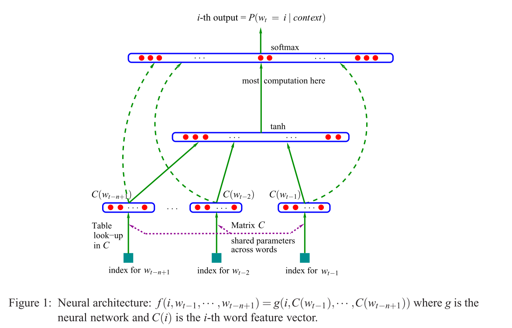
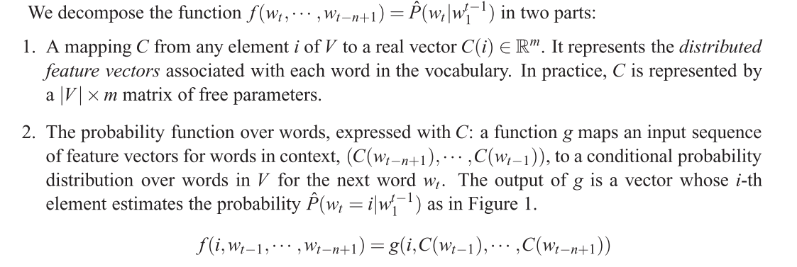
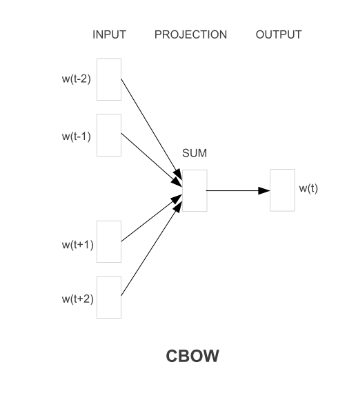
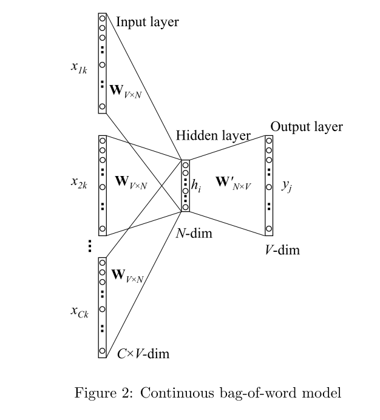
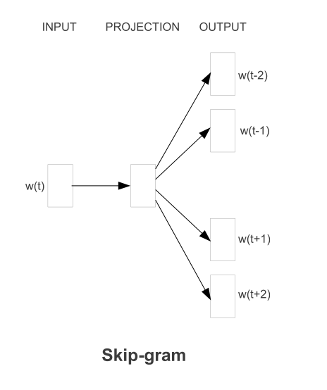
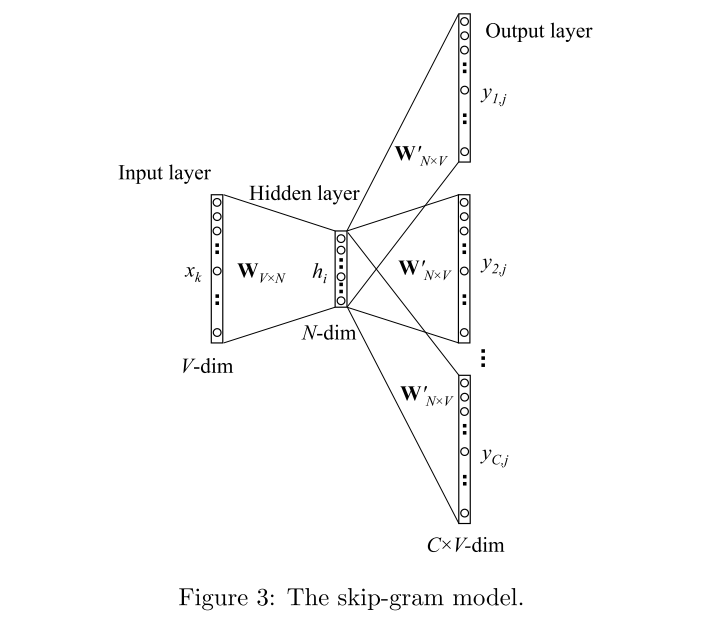

2个新颖的方法，大的数据集。
在语法、语义相似度方面都取得最好的性能。
传统的方式是不考虑单词之间的相似性，每个词字典中的索引所代表。这种方式举例来说：N-grams。
但是 简单的技术往往不能对任务有很好的帮助。
本paper提出一个方法：可以训练数十亿的单词，字典中包括百万单词。然后将这些单词的表征维度限制在50~100之间。之前从来没有方法可以做到。
提出了最经典的一个例子
vector(”King”) - vector(”Man”) + vec- tor(”Woman”) results in a vector that is closest to the vector representation of the word Queen [20]
目标是：学习分布式表征，最小化时间复杂度。
word2vec提出了两类新的结构：
首先解释两个概念：
continuous：连续的是相对于单词的表征来说的，单词表征是非连续的。
distributed：相对于离散概念来讲，之前表征某个单词是用0或者1。0表示不存在，1表示存在。只需要再特定位置上，用0、1,来区分就足够了。而分布式表征，使用的是多维数据同时来表征。word2vec 训练得到的模型，表征每个单词用500维向量，那么需要这500维同时其作用才可以表征该单词，而不是某个位置上其作用，才可以表征。
NNLM：在论文 中提出该结构。其经典图如下：

上图的f(x) 在论文中的论述有两部分：

需要注意的点：
- 其中$w_i^{t-1}$ 该表示单词从
i一直到t-1的序列。 - 上图中的虚线表示可有可无，后续文中会有体现。
上述公式包含两个映射：C 和g。C 可以理解成embedding层，例如C(i) 则是单词i 的 feature vector（这里不用纠结，为什么不是index ，理解其概念就好）。g 可以实现被前馈网络，循环网络，或者其他的参数函数。
所以，整个模型的结构大概可以做如下描述：

其中W 可以选择是否为0，x 是特征向量的拼接，原文叙述：x is the word features layer activation vector, which is the concatenation of the input word features from the matrix C。

word2vec 该模型其实提出了两个架构，一个是CBOW，一个是Skip-gram。
CBOW
该结构与上文中提到的NNLM结构非常相似，但是隐藏层被移除了，映射层被所有单词共享。这里可能会有疑问，什么叫 映射层被所有单词共享？原文：
1 | The first proposed architecture is similar to the feedforward NNLM, where the non-linear hidden layer is removed and the projection layer is shared for all words (not just the projection matrix); thus, all words get projected into the same position (their vectors are averaged) |
其文中对CBOW结构的描述如下：


我看到这是比较懵逼的，看到这张图我更加懵逼了，因为这张图省略了大量的细节，于是我找到了另外一篇文章：
这张图相对来说，清晰很多了。其中$W_{VN}$ 和 $W^{‘}_{NV}$ 均为权重矩阵。
用一句话来讲：是利用上下文内容来预测当前词。
更为精确的过程描述：上下文内容，均用bag of word 模型来表示，然后权重矩阵的映射到隐藏层，求其均值，然后在通过权重矩阵求出当前词。
举例来讲：一句话 我是中国人。
每个字均用词袋模型来表示：
1 | 我: 1 0 0 0 0 |
因为该模型是利用上下文来预测中间词。我们选择中间词是中 。那么，我们用 我,是,国,人 来预测中。
随机初始化
则根据上述运算顺序：
- 对比 与。
Skip-gram Model
与CBOW完全不同，其可以理解成CBOW的逆过程。
用一句话来解释：利用当前词来预测上下文。
更为精确的过程描述：当前词 通过权重矩阵的映射到隐藏层，然后在通过权重矩阵求出上下文内容。


- 对比 与。
优化方式
层次化softmax
负采样